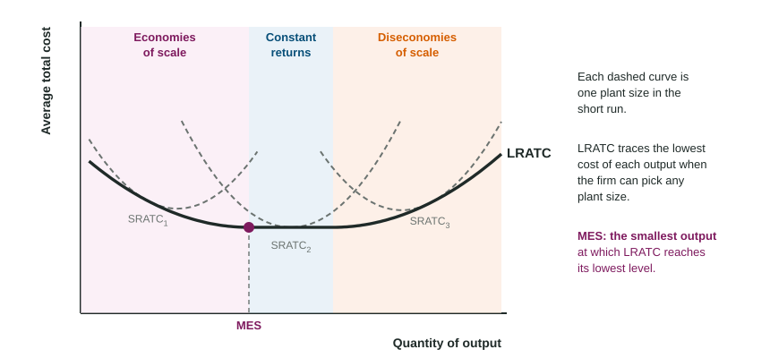

A neighborhood brewery that triples in size can buy grain by the truckload, run a bottling line instead of filling bottles by hand, and spread its advertising over far more cans. Each can gets cheaper to make. Grow it into a giant with plants on three continents, though, and meetings, paperwork and missed messages can push the cost of each can back up. This topic is about cost in the long run, when the firm can change everything.
Every input can change
In the short run a firm has a fixed plant, so it moves along one U-shaped ATC curve. In the long run it can build a bigger or smaller plant, so each plant size has its own short-run ATC curve. For each output the firm picks the plant with the lowest cost. The long-run average total cost curve (LRATC) traces those lowest average costs: it sits on or below every short-run ATC curve.

Returns to scale
Returns to scale ask a physical question: if a firm doubles every input, what happens to output?
| Inputs double and output | Returns to scale | With input prices unchanged, LRATC | Name on the cost curve |
|---|---|---|---|
| more than doubles | increasing | falls | economies of scale |
| exactly doubles | constant | stays the same | constant returns to scale |
| less than doubles | decreasing | rises | diseconomies of scale |
Returns to scale describe inputs and output; economies and diseconomies of scale describe cost per unit. They line up when input prices do not change, because doubling every input then doubles total cost.
Worked example: LRATC from a table. A kayak maker's lowest total cost, choosing any plant size, is $1,000 for 100 kayaks a year, $1,600 for 200, $1,800 for 300, $2,400 for 400, $3,500 for 500 and $4,800 for 600.
- Divide by output. LRATC is , then 8, 6, 6, and 8 dollars.
- Economies of scale from 100 to 300 kayaks, where LRATC falls from $10 to $6.
- Constant returns from 300 to 400, where LRATC stays at $6.
- Diseconomies of scale past 400, where LRATC rises to $7 and $8.
- Minimum efficient scale is 300 kayaks: the smallest output at the lowest LRATC.
Why LRATC falls, then rises
Economies of scale come from size itself: workers and managers who specialize in one job, machines that only pay off at high output, discounts for buying in bulk, and fixed costs such as design or advertising spread over more units. Diseconomies of scale come from the strain of size: many layers of managers, slow decisions, messages lost between sites, workers who feel far from the firm's goals.
Do not mix these up with diminishing marginal returns. That idea needs a fixed input, so it belongs to the short run. Diseconomies of scale happen when every input grows.
Minimum efficient scale and the number of firms
Minimum efficient scale (MES) is the smallest output at which LRATC reaches its lowest level. Compare it with how much the whole market buys. If MES is tiny next to market demand, as for hair salons or farms, many firms can each produce at the lowest cost, and the market tends to have many small firms. If MES is a large share of the market, as for aircraft engines, only a few firms can each reach low cost, and the market tends to have a few large firms. That link shapes the market structures in the rest of this unit and in Unit 4. The exam asks fewer long-run cost questions than short-run ones, but students often lose the point by confusing these ideas, so learn the table above well.